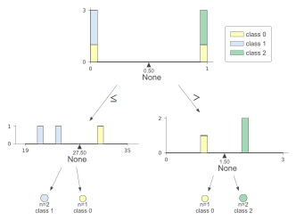

import config
import sqlite3
import pandas as pd
from tqdm import tqdm
from zipfile import ZipFile
from datatable import dt, fvariables = pd.read_csv('data/consult/selected_variables_backup.csv')
variables| Database | Variável | Filter | Renomear | |
|---|---|---|---|---|
| 0 | sihsus | ano_internacao | ano_internacao between 2010 and 2019 | ano |
| 1 | sihsus | PROC_REA | PROC_REA in ('0310010039', '0411010034') | tipo_parto |
| 2 | sihsus | CNES | CNES is not null | cnes_hospital |
| 3 | sihsus | int_codigo_adotado | int_codigo_adotado is not null | hosp_cod_municipio |
| 4 | sihsus | int_RSAUDCOD | int_RSAUDCOD is not null | hosp_cod_regiao_saude |
| 5 | sihsus | res_codigo_adotado | res_codigo_adotado is not null | res_cod_municipio |
| 6 | sihsus | res_RSAUDCOD | res_RSAUDCOD is not null and res_RSAUDCOD != 5301 | res_cod_regiao_saude |
| 7 | sihsus | def_idade_anos | def_idade_anos between 10 and 49 | idade |
| 8 | sinasc | ano_nasc | ano_nasc between 2010 and 2019 | ano |
| 9 | sinasc | DTNASC | DTNASC is not null | data |
| 10 | sinasc | def_consultas | def_consultas not like 'Ignorado' | consultas_pre_natal |
| 11 | sinasc | def_loc_nasc | def_loc_nasc like 'Hospital' | local_nascimento |
| 12 | sinasc | CODESTAB | CODESTAB is not null | cnes_hospital |
| 13 | sinasc | nasc_codigo_adotado | nasc_codigo_adotado is not null | hosp_cod_municipio |
| 14 | sinasc | nasc_RSAUDCOD | nasc_RSAUDCOD is not null | hosp_cod_regiao_saude |
| 15 | sinasc | res_codigo_adotado | res_codigo_adotado is not null | res_cod_municipio |
| 16 | sinasc | res_RSAUDCOD | res_RSAUDCOD is not null and res_RSAUDCOD != 5301 | res_cod_regiao_saude |
| 17 | sinasc | IDADEMAE | IDADEMAE between 10 and 49 | idade |
| 18 | sinasc | def_parto | def_parto not like 'Ignorado' | tipo_parto |
| 19 | sinasc | GRAVIDEZ | GRAVIDEZ != 9 | n_gestados |
| 20 | sinasc | ESCMAE | ESCMAE != 9 | nivel_escolaridade |
| 21 | sinasc | RACACORMAE | NaN | raca_cor |
| 22 | sinasc | def_sexo | def_sexo not like 'Ignorado' | sexo_nascido |
| 23 | sinasc | floor(PESO/100.00)*100 | floor(PESO/100.00)*100 between 500 and 5000 | peso_nascido |
| 24 | sinasc | def_raca_cor | def_raca_cor not like 'Ignorado' | raca_cor_nascido |
| 25 | sinasc | APGAR1 | APGAR1 between 0 and 10 | apgar1 |
| 26 | sinasc | APGAR5 | APGAR5 between 0 and 10 | apgar5 |
| 27 | cnes | CNES | CNES is not null | cnes |
| 28 | cnes | VINC_SUS | VINC_SUS = 1 | vinc_sus |
| 29 | cnes | def_cod_ir | def_cod_ir is not null | cod_ir |
| 30 | cnes | CODUFMUN | CODUFMUN is not null | cod_uf_mun |
| 31 | cnes | def_natureza | def_natureza is not null | natureza |
| 32 | cnes | def_esfera_a | def_esfera_a is not null | esfera |
cnes_sus = set(pd.read_csv('data/consult/cnes/cnes_sus_sinasc.csv')['cnes'].values)Database Files
def get_db_zip_path(db):
db = db.upper()
db_zip = f'{config.PATH_DATABASES}/{db}/{db}.zip'
if db == 'SIHSUS':
db_zip = '/Volumes/SanDisk/SIHSUS.zip'
return db_zipdef get_db_files(db):
db_zip = get_db_zip_path(db)
files = ZipFile(db_zip).namelist()
files_path = [
f'{db_zip}/{file}'for file in files if 'dict' not in file]
return files_pathdef get_db_variables_map(db):
df = variables[(variables['Database'] == db)]
return {row['Variável'] : row['Renomear']
for _, row in df.iterrows()}def get_db_variables_set(db):
return set(variables[
(variables['Database'] == db)
]['Variável'].values)Filters
def filter_cnes(df):
return df[
(f['VINC_SUS'] == 1),
:
]def filter_sinasc(df):
cnes_col = df['CODESTAB'].to_list()[0]
df = df[
[cnes in cnes_sus for cnes in cnes_col],
:]
df = df[
(
(f['ano_nasc'] >= 2010)
&
(f['ano_nasc'] <= 2019)
) & (
(f['IDADEMAE'] >= 10)
&
(f['IDADEMAE'] <= 49)
) & (
(f['res_RSAUDCOD'] != None)
&
(f['res_RSAUDCOD'] != 5301)
) & (
(f['nasc_RSAUDCOD'] != None)
) & (
(f['res_codigo_adotado'] != None)
) & (
(f['nasc_codigo_adotado'] != None)
) & (
(f['def_loc_nasc'] == 'Hospital') # (f['def_loc_nasc'] == 'Hospital') (f['LOCNASC'] == 1)
) & (
(f['def_parto'] != 'Ignorado') # (f['def_parto'] != 'Ignorado') (f['PARTO'] != 9)
) & (
(f['CODESTAB'] != None)
),
:
]
return dfdef filter_sih(df):
return df[
(
(f['PROC_REA'] == 310010039)
|
(f['PROC_REA'] == 411010034)
) & (
(f['ano_internacao'] >= 2010)
&
(f['ano_internacao'] <= 2019)
) & (
(f['def_idade_anos'] >= 10)
&
(f['def_idade_anos'] <= 49)
) & (
(f['res_RSAUDCOD'] != None)
&
(f['res_RSAUDCOD'] != 5301)
) & (
(f['int_RSAUDCOD'] != None)
) & (
(f['res_codigo_adotado'] != None)
) & (
(f['int_codigo_adotado'] != None)
) & (
(f['CNES'] != None)
),
:
]def filter_df(db, df):
df_filtered = pd.DataFrame()
db = db.upper()
if db == 'CNES':
df_filtered = filter_cnes(df)
if db == 'SINASC' and 'CODESTAB' in df.names:
df_filtered = filter_sinasc(df)
if db == 'SIHSUS' and 'CNES' in df.names:
df_filtered = filter_sih(df)
return df_filteredSQL DB Connection
def create_connection(db_file=None):
db_file = (db_file
if db_file else config.PATH_DB)
try: conn = sqlite3.connect(db_file)
except sqlite3.Error as e: print(e)
return conndef append_table_to_con(df, con, table):
try:
df.to_sql(
name = table,
con = con,
if_exists = 'append', # append | replace
index = False,
)
except Exception as excep:
print(excep)
print(df.columns)def collect_db(db, con, chunk_size=25):
dfs = list()
files = get_db_files(db)
variables = get_db_variables_set(db)
map_cols = get_db_variables_map(db)
for file_path in tqdm(files):
colums = dt.fread(file_path, max_nrows=0).names
colums = [col in variables for col in colums]
df = dt.fread(file_path, columns=colums)
df = filter_df(db, df)
if df.shape[0] > 0:
df = df.to_pandas().rename(columns=map_cols)
dfs.append(df)
if len(dfs) > chunk_size:
append_table_to_con(pd.concat(dfs), con, db)
dfs = list()
if len(dfs) > 1:
append_table_to_con(pd.concat(dfs), con, db)
return TrueRun
db_path = f'{config.PATH_DATABASES}/PARTOS/partos.db'
with (conn := create_connection(db_path)):
for db in ['sinasc']:#, 'cnes']:
collect_db(db, conn)100%|██████████| 675/675 [04:25<00:00, 2.54it/s]- def
100%|██████████| 675/675 [05:24<00:00, 2.08it/s]
2.48GB
- numeros
100%|██████████| 675/675 [03:50<00:00, 2.93it/s]
1.48GB
- filtro cnes e numeros
100%|██████████| 675/675 [03:47<00:00, 2.97it/s]
1.28GB
- filtro cnes e def
100%|██████████| 675/675 [04:25<00:00, 2.54it/s]
2.15GB
conn = create_connection(db_path)q = 'select count(*) from sinasc limit 5'
pd.read_sql_query(q, con=conn)| count(*) | |
|---|---|
| 0 | 24494524 |
24494524
24494524-168167607677764q = 'select * from sinasc order by cnes_hospital limit 5'
pd.read_sql_query(q, con=conn)| cnes_hospital | idade | nivel_escolaridade | n_gestados | data | apgar1 | apgar5 | raca_cor | sexo_nascido | raca_cor_nascido | local_nascimento | tipo_parto | consultas_pre_natal | hosp_cod_regiao_saude | hosp_cod_municipio | res_cod_regiao_saude | res_cod_municipio | ano | |
|---|---|---|---|---|---|---|---|---|---|---|---|---|---|---|---|---|---|---|
| 0 | 27 | 32 | 4 | 1 | 4012010 | 8.0 | 9.0 | None | Feminino | Parda | Hospital | Cesáreo | 7 e mais | 2601 | 260290 | 2601 | 260290 | 2010 |
| 1 | 27 | 21 | 5 | 1 | 19012010 | 8.0 | 9.0 | None | Masculino | Parda | Hospital | Cesáreo | de 4 a 6 | 2601 | 260290 | 2601 | 260290 | 2010 |
| 2 | 27 | 23 | 4 | 1 | 3022010 | 9.0 | 10.0 | None | Masculino | Parda | Hospital | Cesáreo | de 4 a 6 | 2601 | 260290 | 2601 | 260290 | 2010 |
| 3 | 27 | 25 | 4 | 1 | 27012010 | 8.0 | 9.0 | None | Masculino | Parda | Hospital | Vaginal | 7 e mais | 2601 | 260290 | 2601 | 260720 | 2010 |
| 4 | 27 | 34 | 3 | 1 | 20012010 | 8.0 | 9.0 | None | Feminino | Parda | Hospital | Cesáreo | de 1 a 3 | 2601 | 260290 | 2601 | 260720 | 2010 |
numeric ordinal: - idade - apgar1 - apgar5 - nivel_escolaridade - indice socioeconomico regiao saude res
categoric ordinal: - consultas_pre_natal
categoric one-hot encondig: - tipo_parto - raca_cor
conn.close()ddf = pd.DataFrame()
ddf['cor'] = ['b', 'b', 'a', 'p', 'p', 'p']
ddf['idade'] = [31, 21, 24, 26, 35, 19]
ddf['escol'] = [3, 2, 0, 1, 2, 2]
y_target = pd.Series([0, 1, 1, 0, 2, 2])
ddf = pd.get_dummies(ddf)from sklearn.datasets import load_iris
from sklearn.tree import DecisionTreeClassifieriris = load_iris()clf = DecisionTreeClassifier(random_state=0)clf.fit(ddf, y_target)DecisionTreeClassifier(random_state=0)In a Jupyter environment, please rerun this cell to show the HTML representation or trust the notebook.
On GitHub, the HTML representation is unable to render, please try loading this page with nbviewer.org.
DecisionTreeClassifier(random_state=0)
from dtreeviz.trees import dtreeviz viz = dtreeviz(clf, ddf, y_target)
viz/Users/lucas/Code/lucaslopes/partos/venv/lib/python3.10/site-packages/sklearn/base.py:450: UserWarning: X does not have valid feature names, but DecisionTreeClassifier was fitted with feature names
warnings.warn(